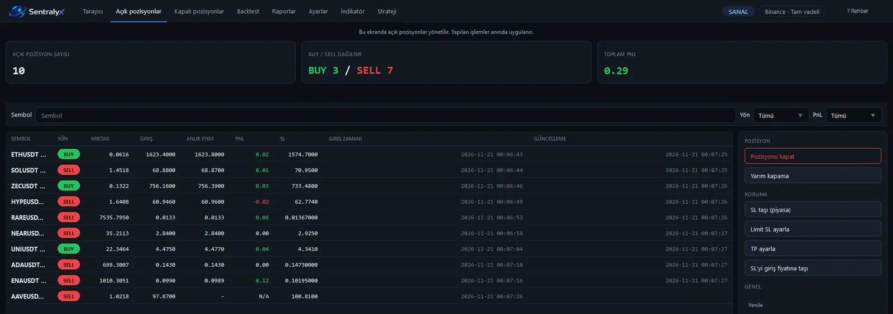

Çalışma mantığı
Sentralyx Nasıl Çalışır? — Ne Yapar, Ne Yapmaz?
Sentralyx, kripto piyasalarını analiz eden, strateji kuran, backtest yapan ve işlem süreçlerini otomasyona bağlayan masaüstü trading yazılımıdır.
Kurallar sağlanınca sistem devreye girer
Amaç; kullanıcıyı sürekli grafik izlemekten kurtarmak, karar sürecini belirli kurallara bağlamak ve aynı stratejiyi disiplinli şekilde uygulayabilmesini sağlamaktır.
Uygun koşullar oluştuğunda
Sentralyx piyasayı sürekli tarar ve kullanıcının belirlediği strateji koşullarını kontrol eder.
- İşlem fırsatlarını tespit eder
- Giriş seviyesini belirler
- Stop-loss seviyesini hesaplar
- Hedef seviyesini oluşturur
- Trailing stop ve başa baş ile kârı korumaya çalışır
- Açık pozisyonları takip eder
- Sonuçları ve işlem geçmişini raporlar
Bu süreçte kullanıcı, sistemin hangi kurallara göre işlem aradığını ve hangi koşullarda işlem açmadığını görebilir.

Sentralyx ile neler yapılabilir?
Sentralyx, kripto piyasalarını sistematik şekilde analiz etmek, strateji kuralları oluşturmak, geçmiş veriler üzerinde test etmek ve işlem süreçlerini otomasyona bağlamak için geliştirilen masaüstü bir trading yazılımıdır.
Piyasa tarama
Birden fazla kripto parayı aynı anda takip ederek strateji koşullarına uyan fırsatları arar.
Strateji oluşturma
Kullanıcı kendi işlem mantığını belirli kurallara bağlayabilir. Amaç, anlık duygu veya tahmin yerine tanımlanmış kurallarla çalışmaktır.
Backtest
Hazırlanan stratejiler geçmiş piyasa verileri üzerinde test edilebilir.
Backtest sonuçları gelecekte aynı performansın garanti edildiği anlamına gelmez; stratejinin geçmiş koşullardaki davranışını analiz etmek için kullanılır.
İşlem ve risk yönetimi
Giriş, stop-loss, hedef ve pozisyon büyüklüğü gibi işlem bileşenleri sistematik şekilde ele alınır.
Açık pozisyon takibi
Açık işlemler takip edilir ve tanımlanan işlem kurallarına göre yönetilebilir.
Raporlama
İşlem geçmişi, strateji sonuçları ve performans verileri analiz edilebilir.
Fikir değil, çalışan bir uygulama
Sentralyx yalnızca bir fikir, sinyal grubu veya teorik proje değildir. Aktif olarak geliştirilen ve gerçek kullanıcı akışları bulunan bağımsız bir masaüstü trading yazılımıdır.




Sentralyx ne yapmaz?
Sentralyx:
- Kâr garantisi vermez
- Gelecekteki fiyatı kesin olarak tahmin ettiğini iddia etmez
- Yatırım danışmanlığı hizmeti sunmaz
- Her piyasa koşulunda kazanç sağlayacağını vaat etmez
- Kullanıcı adına risksiz işlem yapmaz
Her trading stratejisinde olduğu gibi zarar ihtimali vardır. Sentralyx'in amacı riski ortadan kaldırmak değil; işlem sürecini daha sistematik, ölçülebilir ve kurallı hale getirmektir.
Kullanıcının kontrolü
Kullanıcı hangi stratejiyi kullanacağına, hangi piyasalarda çalışacağına ve hangi risk seviyelerini kabul edeceğine kendisi karar verir.
Sentralyx bir karar destek ve otomasyon aracıdır; nihai işlem sorumluluğu kullanıcıya aittir.
Bu sayfadaki bilgiler ürün kapsamını açıklamak içindir; yatırım tavsiyesi değildir.
İlgili sayfalar
Stratejini bugün sanal modda dene
Uygulamayı indir, stratejini kur ve gerçek para kullanmadan nasıl çalıştığını gör.